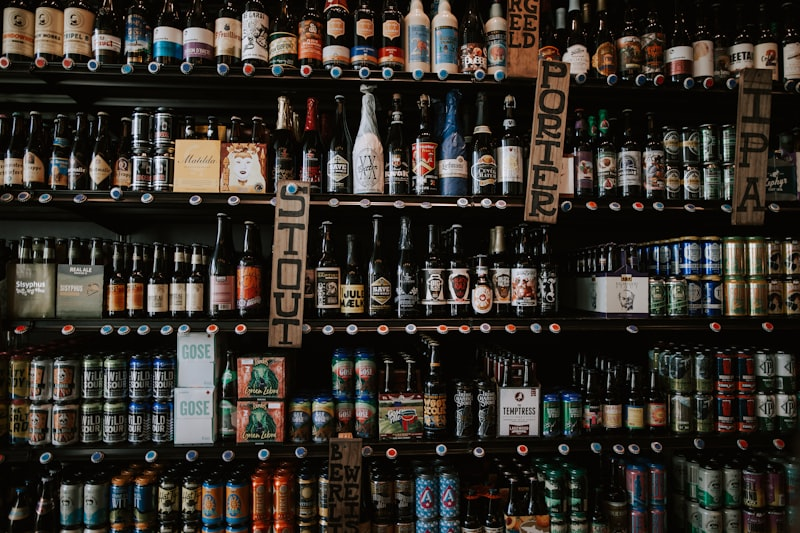

研修の目的
AI
人工知能技術の
実践的活用
IoT
モノのインターネットによる
データ収集・活用
DX
デジタルトランスフォーメーション
推進
AI（人工知能）
画像認識・外観検査
- カメラで製品の傷や欠陥を自動検出
- 人の目による検査との違いを学べる
異常検知
- 機械の振動や温度の変化から故障の兆候を検出
需要予測・在庫管理
- 過去のデータを分析し、生産量や在庫を最適化
ディープラーニング応用
- 品質管理や検査工程での活用事例
IoT（モノのインターネット）
センサーによるデータ収集
省電力無線通信
LPWAなどの省電力無線通信
RFID管理
RFIDによる部品・製品管理
IoTデバイスの仕組み
DX（デジタルトランスフォーメーション）
生産ラインの見える化
稼働率のリアルタイム表示
生産工程の効率化
データ活用による経営改善
人手不足への対応
ペーパーレス化・デジタル化
施設紹介
静岡県AI・IoT推進ラボは、県内の中小企業へのIoT導入支援拠点として、静岡県工業技術研究所内に設置されています。最新のIoT関連機器を「見て・触れて・試せる」環境を提供します。

最新技術を体験
民間企業15社のブースで、プレス加工機の見える化、生産ラインIoT、工作機械IoT、AI画像検査、遠隔監視システムなど、最新のIoT技術を実際に体験できます。

ワークショップ実習
10〜20人規模のワークショップ形式。Raspberry Pi + Node-REDを用いたIoT実習や、AIを活用したビッグデータ解析など、企業の習熟度に応じた実習を開催しています。
主な展示内容
1泊2日スケジュール
実習と観光を両立する、充実した2日間
研修の概要説明、チーム編成
15社の最新IoT機器を実際に見学・体験
センサー、通信技術、クラウド連携の基礎知識
センサーデータの収集・可視化を実際に手を動かして体験
徒歩5〜10分。牧ヶ谷地域の自然を感じられる公園。湧水や緑を楽しむ
徒歩5分。牧ヶ谷地域の歴史と文化を感じる寺院
徒歩5分。静かな境内を散策できる寺院
駅前再開発ビル「Cenova」内。県内外の作家の作品を展示
家康ゆかりの城址。天守台や石垣を散策
静岡駅周辺で静岡せいか・うなぎ等を味わう
車で約30分。日本三景の一つ。富士山と松林の絶景スポット
海沿いを歩きながら現地の雰囲気を楽しむ
三保からバスまたはタクシーで約30分
静岡駅周辺で土産物店を回る
静岡駅よりお好きな方向へ出発
学習成果
この研修を通じて得られる知識とスキル
AI
- 画像認識・外観検査の仕組みを理解できる
- 異常検知の基本概念と活用方法を学べる
- 需要予測のデータ分析手法を把握できる
- ディープラーニングの製造業応用を知ることができる
IoT
- センサーからクラウドまでのデータフローを理解できる
- Raspberry Pi + Node-REDでの実装を体験できる
- LPWAなどの省電力無線通信の特徴を学べる
- 自社工場でのIoT導入イメージを具体化できる
DX
- 生産ラインの見える化手法を学べる
- データ活用による経営改善の考え方を理解できる
- 人手不足・ペーパーレス化の具体的対応を知ることができる
- 自社の課題を明確化する力が身につく
観光スポット
研修の合間に、牧ヶ谷の自然と文化を

牧ヶ谷湧水公園
牧ヶ谷地域の自然を感じられる公園。湧水や緑を楽しむことができる、静かな環境で散策や休憩に適している。

光鏡院
牧ヶ谷地域にある寺院。地域の歴史や文化を感じられる場所。落ち着いた雰囲気で短時間の散策に向いている。
千手寺
牧ヶ谷周辺の寺院。静かな境内を散策できる。地域に根付いた文化や歴史を知ることができる。

静岡県美術館
駅前再開発ビル「Cenova」内。県内外の作家の作品を展示する県立美術館。

駿府城（駿府城公園）
家康ゆかりの城址。天守台や石垣を散策できる歴史的公園。

三保松原
日本三景の一つ。富士山と松林の絶景スポット。世界遺産にも登録されている。
アクセス
〒421-1298
静岡県静岡市葵区牧ヶ谷2078
（静岡県工業技術研究所内）
054-278-3027
sk-kd@pref.shizuoka.lg.jp
平日 9:00〜17:00
交通手段
東海道新幹線「静岡駅」下車
しずてつジャストライン「県工業技術研究所」下車 徒歩約3分
東名高速道路「静岡IC」から約20分
牧ヶ谷ICから約5分
予算（概算）
| 項目 | 金額 |
|---|---|
| 交通費 | ￥13,000 |
| 宿泊費 | ￥5,000〜10,000 |
| その他 | ￥7,000〜12,000 |
| 合計 | ￥25,000〜30,000 |